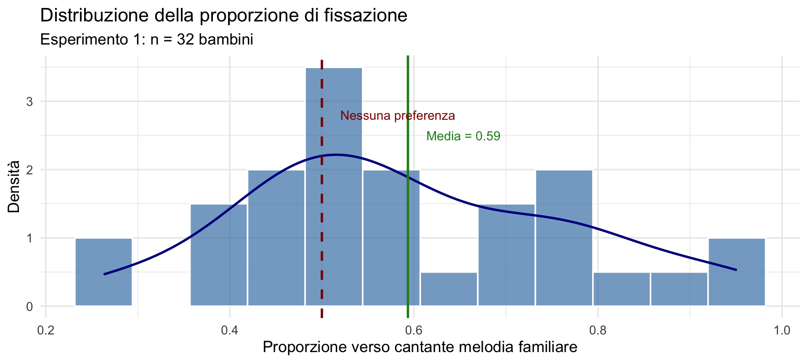
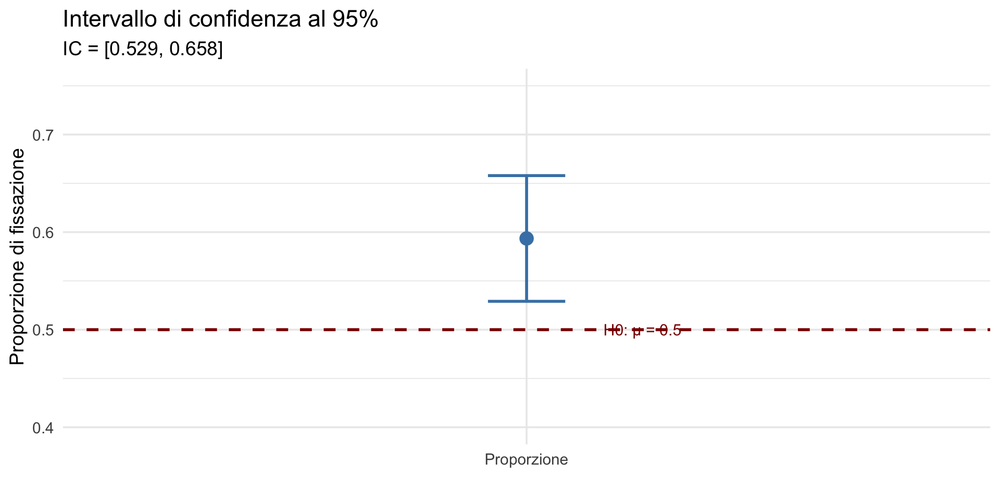
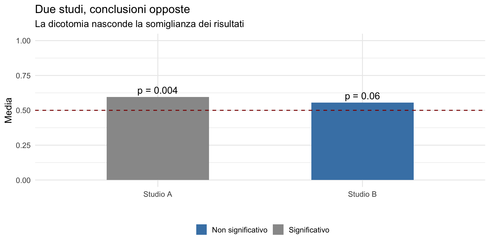

![]()
Campione: 32 bambiniEtà media: 5.61 mesiRipensare i dati alla luce dei due paradigmi inferenziali — Segmento 1
17 febbraio 2026
Immaginate di essere uno psicologo dello sviluppo. Un genitore vi chiede: “È vero che cantare al mio bambino lo aiuta a fidarsi delle persone?”
Trovate un articolo su Psychological Science che sembra rispondere proprio a questa domanda. Riporta: “effetto significativo, \(p\) = .006”.
Ma cosa significa davvero per quel genitore? E quanto dovreste fidarvi di quel numero per orientare il vostro consiglio professionale?
Domanda guida
Dato questo dataset, che cosa possiamo dire onestamente sul fenomeno che stiamo studiando?
Questa esercitazione non è un ripasso meccanico del corso. È un tentativo di ricomporre tutti i concetti visti dalla Lezione 14 alla 27 in un’unica storia coerente: dalla raccolta dei dati, alle scelte analitiche, fino al giudizio scientifico finale.
Alla fine di questa sessione, non ci limiteremo a conoscere le procedure di applicazione dei metodi statistici (bayesiano e frequentista).
L’obiettivo principale è comprendere i criteri che guidano la scelta di un approccio piuttosto che dell’altro, sviluppando una consapevolezza critica sul perché, in un determinato contesto, un metodo possa essere preferibile.
Non applicheremo procedure “a memoria”.
Non cercheremo la risposta “giusta”.
Non separeremo tecnica e interpretazione.
Faremo quello che fa uno psicologo quando legge la letteratura scientifica: valutare criticamente l’evidenza per decidere cosa comunicare a chi si affida a noi.
“For 5-Month-Old Infants, Melodies Are Social”
Pubblicato su Psychological Science — una delle riviste più prestigiose in psicologia.
Domanda di ricerca:
Le melodie cantate dai genitori veicolano informazioni sociali ai bambini?
Questo studio tocca un tema centrale per chi lavorerà con bambini e famiglie:
La risposta a queste domande dipende dalla qualità dell’evidenza.
Ed è qui che entra in gioco la statistica.
Fase 1: Familiarizzazione (1-2 settimane a casa)
Fase 2: Test (in laboratorio)
Proporzione del tempo di fissazione verso chi canta la melodia familiare:
\[ \text{Proporzione} = \frac{\text{Tempo verso cantante familiare}}{\text{Tempo totale}} \]
“I bambini guardano più a lungo chi canta la melodia familiare?”
Formalmente:
Nota
Notate: questa formulazione è già un compromesso. La domanda naturale — quella che farebbe il genitore — sarebbe: “Qual è la probabilità che i bambini preferiscano la melodia familiare?” Ma il framework frequentista (Lezione 14) non può rispondere a una domanda di questo tipo.
Campione: 32 bambiniEtà media: 5.61 mesiUn aspetto importante: questi dati sono pubblicamente disponibili su OSF. Come abbiamo discusso nella Lezione 27, la condivisione dei dati è una pratica fondamentale dell’Open Science.
Ogni analisi inizia prima dei numeri.
Prima ancora di calcolare una media, facciamo scelte implicite:
La statistica non estrae informazione dai dati. La costruisce, a partire da una serie di assunzioni.
Media: 0.593 DS: 0.179 Min-Max: 0.26 - 0.95 
La statistica descrittiva non è una fase “obbligatoria” e neutra. È già una forma primitiva di modellazione.
Quando calcoliamo media, deviazione standard, distribuzioni marginali, stiamo implicitamente assumendo simmetria, continuità, rilevanza della tendenza centrale.
Ogni statistica descrittiva è un’ipotesi sul mondo, non solo un riassunto.
La media campionaria è 0.59 , superiore a 0.5.Ma questa è solo una stima puntuale da un campione di 32 bambini.
La domanda cruciale
Quanto siamo sicuri che questa differenza rifletta una vera preferenza nella popolazione e non sia solo una fluttuazione casuale?
Questa è la stessa domanda che ci siamo posti nella Lezione 25, quando abbiamo introdotto l’inferenza bayesiana su una media.
La probabilità non è solo matematica. È una risposta alla domanda:
dove collochiamo l’incertezza?
Questo punto distingue radicalmente i due paradigmi inferenziali che abbiamo costruito nelle Lezioni 14–26.
L’approccio frequentista risponde in modo rigoroso a una domanda precisa:
cosa succede se ripetiamo infinite volte lo stesso esperimento?
È estremamente potente quando il processo è ripetibile, il campionamento è ben definito e l’obiettivo è il controllo dell’errore a lungo termine.
Il problema non è tecnico. È epistemologico.
In psicologia, di solito vogliamo sapere:
quanto è plausibile questo valore del parametro, dato ciò che abbiamo osservato?
Ma, come abbiamo visto nelle Lezioni 15–16:
Il frequentismo non sbaglia. Risponde semplicemente a domande diverse da quelle che ci interessano.
L’inferenza bayesiana (Lezione 17: prior, likelihood, posterior) sposta il focus:
Il risultato dell’analisi non è un numero, ma una distribuzione di credenze aggiornata dai dati. Questo consente di formulare direttamente le domande scientifiche che ci interessano.
L’obiettivo ultimo della modellazione statistica è spesso la predizione, non la stima fine a sé stessa.
Lo strumento chiave è la distribuzione predittiva (Lezioni 22–23, ripresa nella 25–26):
In un modello bayesiano, dopo aver visto i dati, non otteniamo un singolo valore per la media \(\mu\), ma una distribuzione a posteriori che rappresenta tutta la nostra conoscenza e incertezza su di esso.
Se usassimo solo una stima puntuale per fare previsioni, ignoreremmo questa incertezza. Le nostre previsioni risulterebbero troppo “sicure”.
La soluzione è la distribuzione predittiva: la previsione per una nuova osservazione \(y_{\text{new}}\) non viene fatta con un solo \(\mu\), ma considerando tutti i possibili valori di \(\mu\), ciascuno ponderato per la sua credibilità a posteriori.
\[ p(y_{\text{new}} \mid \text{dati}) = \int p(y_{\text{new}} \mid \boldsymbol{\theta}) \, p(\boldsymbol{\theta} \mid \text{dati}) \, d\boldsymbol{\theta} \]
(Previsione) = (Previsione dato un parametro) × (Credibilità di quel parametro), sommato su tutti i parametri.
In pratica: simuliamo migliaia di scenari possibili dal modello (prendendo parametri dalla distribuzione a posteriori) e osserviamo la varietà di \(y_{\text{new}}\) generata. L’istogramma risultante è la distribuzione predittiva.
Un buon modello non è quello che “stima bene”, ma quello che fa predizioni sensate.
Ipotesi:
One Sample t-test
data: y
t = 2.9597, df = 31, p-value = 0.005856
alternative hypothesis: true mean is not equal to 0.5
95 percent confidence interval:
0.5290672 0.6579153
sample estimates:
mean of x
0.5934913 Statistica t: 2.96 Gradi di libertà: 31 p-value: 0.0059 IC 95%: 0.529 - 0.658 Conclusione frequentista:
“Rifiutiamo \(H_0\) al livello \(\alpha\) = 0.05. I bambini mostrano una preferenza significativa (\(p\) = 0.006).”
Attenzione all’interpretazione!
Il valore-\(p\) NON ci dice:
Ci dice solo:
“Se non ci fosse alcuna preferenza, la probabilità di osservare una media così estrema sarebbe circa 0.6%.”

Interpretazione corretta:
“Se ripetessimo questo studio infinite volte, il 95% degli intervalli così costruiti conterrebbe il vero valore di μ.”
Interpretazione ERRATA (ma comune):
“C’è il 95% di probabilità che μ sia tra 0.53 e 0.66.”
Nota
Ricordate (Lezione 20): nel framework frequentista, il parametro μ è fisso (non casuale), quindi non ha una “probabilità” di essere in un intervallo.
Cohen's d | 95% CI
------------------------
0.52 | [0.15, 0.89]
- Deviation from a difference of 0.5.d = 0.52 → effetto “medio” secondo le convenzioni di Cohen.
Ma attenzione: questo è un effetto standardizzato, che dipende dalla variabilità del campione.
| Statistica | Valore | Interpretazione ||-------------|-------------------------------|------------------------------|| Media | 0.59 | Stima puntuale || t( 31 ) | 2.96 | Statistica test || valore-p | 0.006 | Incompatibilità con H0 || IC 95% | [ 0.53 , 0.66 ] | Procedura, non probabilità || d di Cohen | 0.52 | Effetto standardizzato |Cosa manca? La probabilità che H₁ sia vera, la distribuzione di credibilità su μ, la probabilità che l’effetto sia “clinicamente rilevante”.

Questi due studi direbbero cose diverse nella letteratura
ma descrivono lo stesso fenomeno.
La differenza non è nei dati. È nella soglia.
Pensate a questo in termini professionali: un collega legge “effetto significativo” e consiglia ai genitori di cantare; un altro legge “effetto non significativo” e non ne parla.
Ma l’evidenza nei due studi è quasi identica. La differenza sta solo nel numero di bambini reclutati nello studio, non nella forza dell’effetto.
Importante
È necessario distinguere tra le domande che i ricercatori vorrebbero porre dalle domande (del tutto diverse) a cui il frequentismo risponde.
| Domanda del ricercatore | Risposta frequentista |
|---|---|
| Qual è la probabilità che ci sia una preferenza? | p = 0.06 (NON è questa probabilità!) |
| Quanto è grande la preferenza? | d = 0.2 (dipende da sigma) |
| Quanto siamo sicuri? | 95% CI (riguarda la procedura, non i parametri) |
| Nota: L'approccio frequentista non risponde direttamente alle domande sostanziali dei ricercatori. |
Nella seconda parte vedremo come l’approccio bayesiano risponde direttamente a queste domande.
Studio ben progettato, con dati condivisi (Open Science).
L’analisi frequentista restituisce:
t(31) = 2.96, p = 0.06, d = 0.2
Il risultato è il classico effetto “statisticamente significativo”.
Ma cosa significa davvero?
Il metodo frequentista quantifica \(P(\text{dati} \mid H_0)\),
non ciò che ci interessa: \(P(H_0 \mid \text{dati})\).
La decisione binaria nasconde un’incertezza sostanziale e graduale.
Il frequentismo non è sbagliato quando il problema è decisionale (accetta / rifiuta).
Ma la pratica psicologica raramente è puramente decisionale.
È:
Quando un genitore chiede “quanto è probabile che funzioni?”, vuole una risposta graduale, non un sì/no.
Il report finale non è un contenitore di risultati.
È una argomentazione epistemica che rende espliciti le assunzioni, le scelte, i compromessi e le incertezze residue.
Scrivere un report significa:
difendere pubblicamente il proprio ragionamento.
Come abbiamo visto nella Lezione 27, la riproducibilità è la condizione necessaria perché questa difesa sia verificabile.
Abbiamo dati chiari, un effetto plausibile, ma permane un’incertezza residua.
Non possiamo ancora dire: quanto è probabile la preferenza, quanto è grande e quanto è affidabile per nuove osservazioni.
Nel Segmento 2 non cambieremo i dati. Non cambieremo la domanda.
Cambieremo il modo in cui trattiamo l’incertezza.